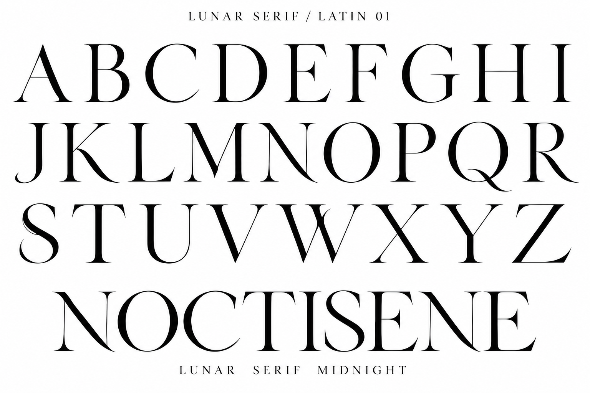
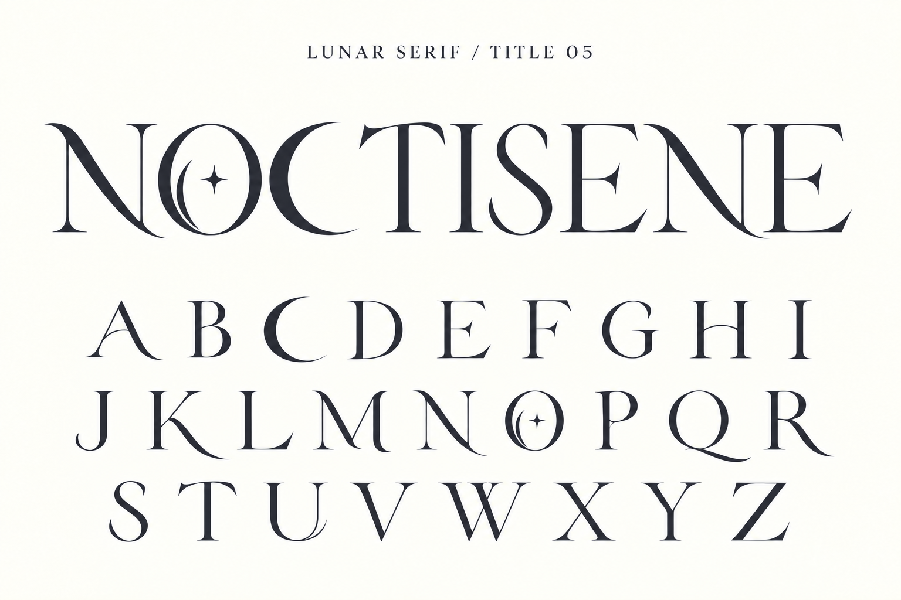

<!doctype html>
<html lang="ja"><meta charset="utf-8"><meta name="viewport" content="width=device-width,initial-scale=1">
<title>LUNAR SERIF — 通常版とタイトル版</title>
<style>
@font-face{font-family:LunarText;src:url(outputs/LUNARSERIFText-Regular.woff2)}
@font-face{font-family:LunarTitle;src:url(outputs/LUNARSERIFTitle-Regular.woff2)}
*{box-sizing:border-box}body{margin:0;background:#faf8f0;color:#44434b;font-family:Georgia,'Yu Mincho',serif}main{max-width:1400px;margin:auto;padding:35px 5vw 90px}header{display:flex;justify-content:space-between;gap:20px;border-bottom:1px solid #c9c6bc;padding-bottom:22px}header span{letter-spacing:.2em}a{color:inherit;text-underline-offset:5px}h1{font:400 clamp(38px,6vw,78px) LunarTitle;margin:55px 0 12px}p{line-height:1.9}nav{display:flex;gap:12px;flex-wrap:wrap;margin:28px 0}button,a.download{border:1px solid #88858a;background:none;color:inherit;padding:12px 20px;font:inherit;cursor:pointer}button[aria-pressed=true]{background:#44434b;color:#faf8f0}.specimen{font-family:LunarTitle;font-weight:400;font-kerning:normal}.hero{font-size:clamp(32px,9vw,135px);white-space:nowrap;margin:70px 0 50px;text-align:center}.controls{display:flex;align-items:center;gap:20px;flex-wrap:wrap}label{display:block}input[type=text]{width:100%;background:transparent;border:0;border-bottom:1px solid #aaa5a0;font:20px Georgia,serif;padding:15px 0;margin:12px 0}#sample{font-size:80px;overflow-wrap:anywhere;padding:30px 0;min-height:160px}#status,#coverage{font-size:13px}section{border-top:1px solid #c9c6bc;margin-top:45px;padding-top:28px}h2{font-size:20px;font-weight:400;letter-spacing:.06em}.alphabet{display:grid;grid-template-columns:repeat(9,1fr);gap:25px 10px;font-size:clamp(30px,5vw,70px);text-align:center}.extras{font-size:clamp(22px,3vw,40px);line-height:1.8;overflow-wrap:anywhere}.references{display:grid;grid-template-columns:1fr 1fr;gap:24px}.references img{width:100%;display:block}.references figcaption{margin-top:12px;font-size:14px}figure{margin:0}.links{display:flex;gap:15px;flex-wrap:wrap}footer{margin-top:50px;font-size:13px;line-height:1.8}@media(max-width:600px){header{font-size:12px}.references{grid-template-columns:1fr}.alphabet{grid-template-columns:repeat(5,1fr)}.hero{margin:45px 0}#sample{font-size:48px}main{padding:24px 6vw 60px}}
</style>
<main>
<header><span>LUNAR SERIF</span><a href="japanese.html">日本語版を見る</a></header>
<h1>Two voices of the moon.</h1><p>静かな通常版と、月をまとうタイトル版。<br>採用した2枚の見本から仕上げた欧文書体です。</p>
<nav aria-label="書体を選択"><button id="text" aria-pressed="false">通常版 / Text</button><button id="title" aria-pressed="true">タイトル版 / Title</button></nav>
<p id="status" role="status">フォントを読み込み中…</p>
<div class="specimen hero">NOCTISENE</div>
<section><h2>あなたの言葉で。</h2><label for="entry">英字・数字・記号を入力</label><input id="entry" type="text" value="MIDNIGHT, a quiet story." maxlength="160">
<div class="controls"><label for="size">文字サイズ <output id="sizeValue">80</output> px</label><input id="size" type="range" min="24" max="120" value="80"><label><input id="plain" type="checkbox">装飾のないO</label></div>
<div id="sample" class="specimen">MIDNIGHT, a quiet story.</div><p id="coverage" role="status"></p></section>
<section><h2>A–Z</h2><div class="alphabet specimen" id="alphabet"></div><h2>小文字・数字・記号</h2><div class="extras specimen">abcdefghijklmnopqrstuvwxyz<br>0123456789 &amp; ! ? @ # $ % + = — “Moonlight”</div></section>
<section><h2>採用したデザイン</h2><div class="references"><figure><figcaption>通常版：装飾を抑えた大文字26字</figcaption></figure><figure><figcaption>タイトル版：三日月C、三日月と星のO</figcaption></figure></div><p><a href="verification/editions/comparison.html">全52字の画像比較を見る</a></p></section>
<section><h2>ダウンロード</h2><div class="links"><a class="download" download href="outputs/LUNARSERIFText-Regular.ttf">通常版 TTF</a><a class="download" download href="outputs/LUNARSERIFTitle-Regular.ttf">タイトル版 TTF</a><a href="outputs/LUNARSERIFText-Regular.woff2" download>通常版 WOFF2</a><a href="outputs/LUNARSERIFTitle-Regular.woff2" download>タイトル版 WOFF2</a></div></section>
<footer>各118文字。小文字・数字・記号と和文14文字は既存の独自字形を継承しています。<br>日本語全般には別のJP版をご利用ください。細い線を生かす見出し・ロゴ向けです。<br><a href="LICENSE.txt">利用条件</a> · <a href="docs/editions.md">導入・収録範囲・制作記録</a></footer>
</main>
<script>
const samples=document.querySelectorAll('.specimen'),entry=document.querySelector('#entry'),size=document.querySelector('#size'),plain=document.querySelector('#plain');
let current='title';
function select(id){current=id;for(const b of document.querySelectorAll('nav button'))b.setAttribute('aria-pressed',b.id===id);for(const el of samples)el.style.fontFamily=id==='title'?'LunarTitle':'LunarText';plain.disabled=id==='text';update()}
function update(){document.querySelector('#sample').textContent=entry.value;document.querySelector('#sample').style.fontSize=size.value+'px';document.querySelector('#sizeValue').value=size.value;for(const el of samples)el.style.fontFeatureSettings=plain.checked&&current==='title'?'"ss01" 1':'normal';const extra='\u00a0×–—‘’“”…ノクティセーヌ夜に、余韻を。';const missing=[...new Set([...entry.value].filter(c=>!(c.charCodeAt(0)>=32&&c.charCodeAt(0)<=126)&&!extra.includes(c)))];document.querySelector('#coverage').textContent=missing.length?'未収録の文字（別の書体で表示）：'+missing.join(' '):'入力した文字はすべて収録されています。'}
for(const c of 'ABCDEFGHIJKLMNOPQRSTUVWXYZ'){const span=document.createElement('span');span.textContent=c;document.querySelector('#alphabet').append(span)}
for(const b of document.querySelectorAll('nav button'))b.onclick=()=>select(b.id);entry.oninput=update;size.oninput=update;plain.onchange=update;
Promise.all([document.fonts.load('48px LunarText'),document.fonts.load('48px LunarTitle')]).then(()=>{document.querySelector('#status').textContent='通常版・タイトル版 読み込み完了'}).catch(()=>{document.querySelector('#status').textContent='フォントを読み込めませんでした。ページを再読み込みしてください。'});update();
</script></html>
